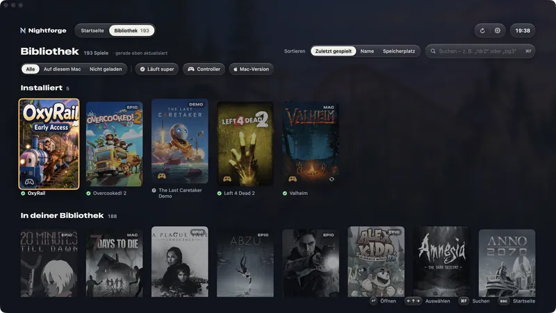

Mac-Versionen zuerstMac versions first
Am liebsten ganz ohne Übersetzung.No translation, whenever possible.
Gibt es ein Spiel auch für den Mac, nimmt Nightforge die Mac-Version – ganz ohne Windows-Übersetzung. Beim ersten Mal richtet es dafür einmalig Steam für Mac ein. Ein kleines MAC-Schild zeigt, welche Spiele so laufen.When a game also comes for the Mac, Nightforge takes the Mac version – without any Windows translation. The first time, it sets up Steam for Mac for that, once. A small MAC tag shows which games run that way.
Klappt eine Mac-Version nicht, übernimmt die Windows-Version – und deine Spielstände ziehen mit.If a Mac version fails, the Windows version takes over – and your saves come along.
